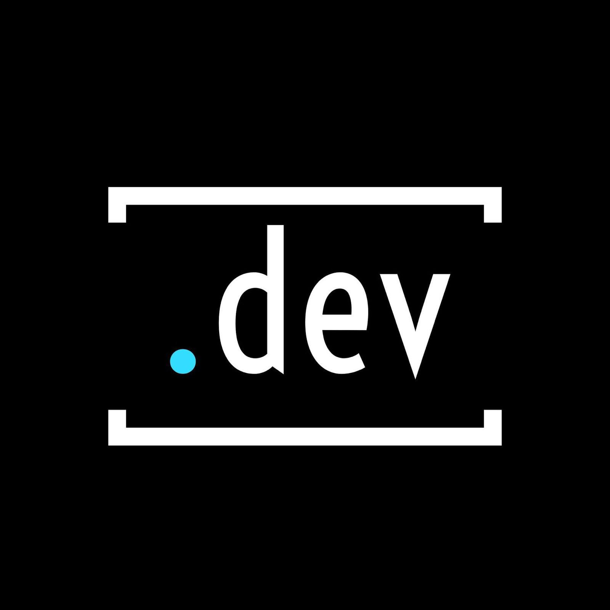

Experience
Relativity

UI/UX Designer
Prototype and user test intuitive interfaces for Relativity e-discovery platform for data-driven organizations and customers. Collaborate on cross-functional agile team to deliver well-designed product to be deployed world-wide.
Freelance
Front-end Developer
Designed and built web and mobile applications using Node.js for startup organizations in the mental health and clean energy spaces. Implemented clean website and user interface layouts to meet client needs.
Northwestern .dev
Design Lead and Marketing Director
Organized bi-monthly workshops in UI/UX and graphic design to help aspiring developers iteratively wireframe and test interfaces for yearlong student development projects. Maintained .dev social media platforms, designed promotional materials, and spearheaded recruitment campaign to increase membership and participation in club sponsored hackathons, workshops, socials, and mentorship program.